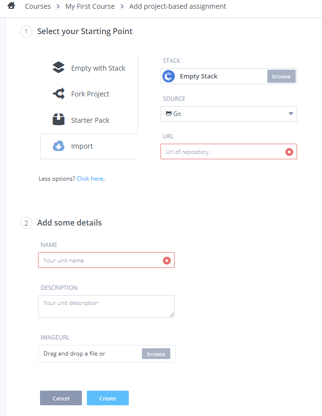

Codio works with a series of templates, or Codio stacks.
You can use our pre-configured stacks or create your own. This template approach makes Codio easy to use, configure and adapt.
Codio's templates deliver fully preconfigured servers in less than 5 seconds, no matter how complex the configuration..
You can use our pre-configured stacks or create your own.
What is a project?
Here are the key things you need to know about projects.
- A project is an Ubuntu server.
- We commonly refer to your project server as a box.
- You can create as many projects as you need.
- Each project box is fully isolated from every other one.
- When you open a project you are taken into the box and are shown the Codio IDE.
- You have access to the command line via a terminal window.
- You have sudo level privileges to your server, so you can install and configure any box exactly as you please.
- You can snapshot the software configuration, commonly referred to as a stack, of any box and add it to the Stacks template library.
- You can snapshot the combination of a Stack and the project code workspace and add it to the Starter Packs template library.
Strong recommendations
We strongly recommend that you are familiar with the following concepts if you plan to assign projects to classes of students. Even if you don't knowledge of the following project related features will stand you in good stead.
- The Codio IDE
- Stacks
- Starter Packs
- Authoring tutorial content with Codio Guides and Books
- Courses
- Class management
Creating and importing a project
Create a new project, or import one by, clicking on the New Project button on the Dashboard.
You can then choose which of the following Project creation methods you want to use.
Creating an empty project
Select a commonly used Stack from the available list:
For example:
- LAMP: LAMP Stack containing PHP, Apache and MySql with no code workspace.
- Python: Python Stack with no code workspace.
- Empty Stack: an empty Ubuntu Box with no code workspace (suitable for HTML/CSS/JS projects).
Projects created from a Stack will include an explanatory README.md file providing useful information to help you get started and will open automatically for newly created projects.
The list of stacks is only a starting point. You can take any stack and then customize it from the command line. Users have sudo level privileges and so can install and configure exactly as they please.
Refer to the section on Stacks to learn how to create and manage your own software configuration templates.
Importing code into a project
Click on the 'Click here....' link to import or select an alternative software configuration:
- Empty with Stack will create a new project with a stack you select from the full stack options, rather than the limited options available on the main New Project screen.
- Fork project lets you create a new project from another of your projects.
- Starter Pack which is the combination of a Stack and a pre-configured code workspace.
- Import lets you import from Git or from a Zip file of a Codio project.

Selecting a Stack
If you have clicked on the click here link, you can then specify the Stack your new Project will be assigned.
Details
You should give your project a name and a description, which will appear in the projects listing.
Visibility
Projects that are public can be found by any Codio user. If you have a personal subscription or you are a member of an Organization, you can mark the Project as private. In My Projects you will see a padlock icon for any Projects that are private.
Organization owners can enable the ability for you to create public projects. See Public/Private Settings.
You can assign access read, write and full admin rights (ability for others to access the Box from the terminal) to other users for private projects from within the IDE from the Project->Permissions menu.
Accessing your projects
The My Projects area shows all your coding Projects.
Opening a Project
To view a project in the IDE, simply click on one of your projects.
Sorting
Your Projects can be sorted by name or by date last accessed.
Filtering
You can search for a specific project by typing into the Search field. The file list will dynamically filter for you as you type.
Project Settings
You can access your project settings by clicking the gear icon in the right side of the listing.
Searching projects
Codio lets you locate projects in a number of different ways from your project dashboard.
Normal Searching
The simplest and most powerful way to use search is to simply start typing, whereupon Codio will search within all project names, project description and owner fields and filter your project list accordingly.
Advanced Searching
If you want to search in different ways, you can use search tokens to narrow your search. Codio supports the following tokens:
Tokens with parameters
The following tokens allow you to type something after the colon delimiter
name:search the project namedesc:search the project descriptionowner:search the project ownerorg:search for an organization namebegin:search for a class start date (Education feature)end:search for a class end date (Education feature)
Tokens without parameters
These tokens do not take any parameters so add a space after them if you have anything else to enter in the search line.
my:show only projects owned by me.shared:show only projects that are shared with me.public:show only my public projects.private:show only my private projects.
Examples
public: desc:javascriptsearches your public projects where 'javascript' appears in the project description.owner:superman javascriptsearches projects owned by the user 'superman'' where 'javascript' appears in the project name or description.
Accessing another user's project
If you know the user name of another Codio user, you can enter the URL for their account which is of the format:
https://codio.com/username
You will then see that user's Dashboard and all public projects will be displayed. You can then load any of those projects into the IDE by clicking on it.
You will not be able to edit the project but you can fork it into your own account.
If a project has been shared to you, you will be able to view this from your My Projects > Shared with me area.